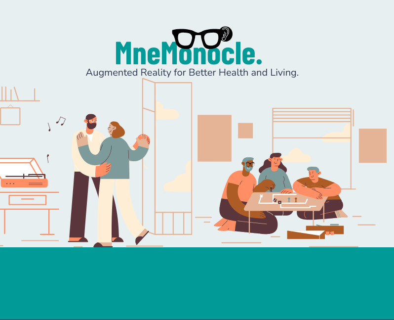
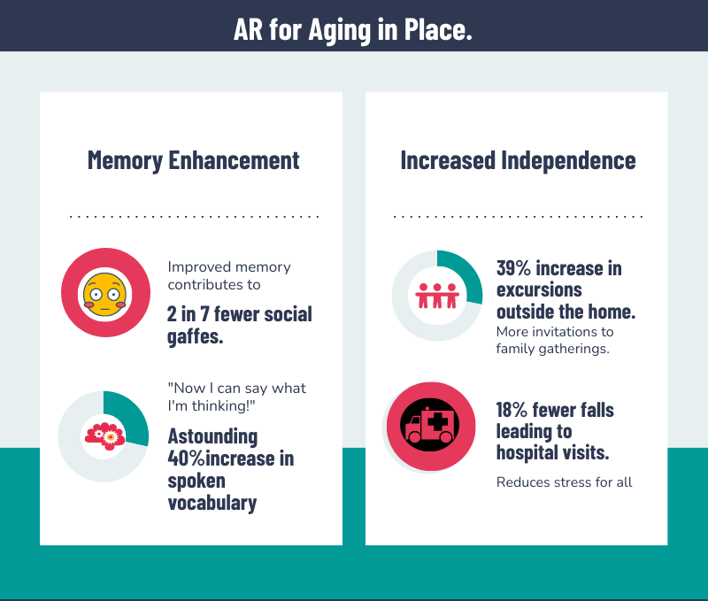
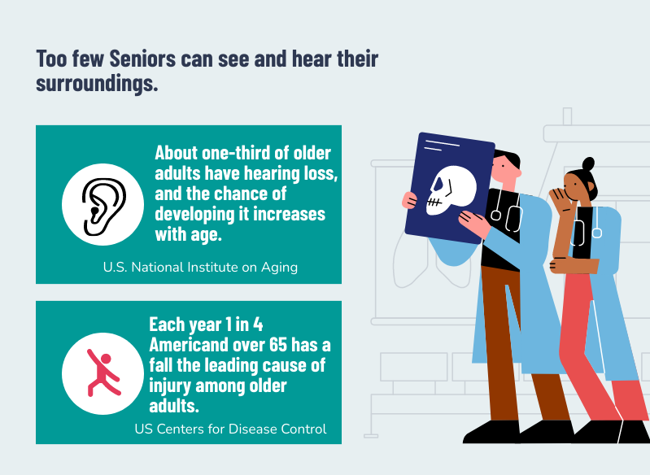
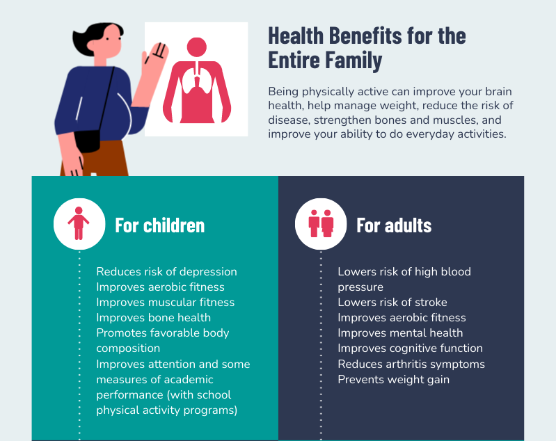
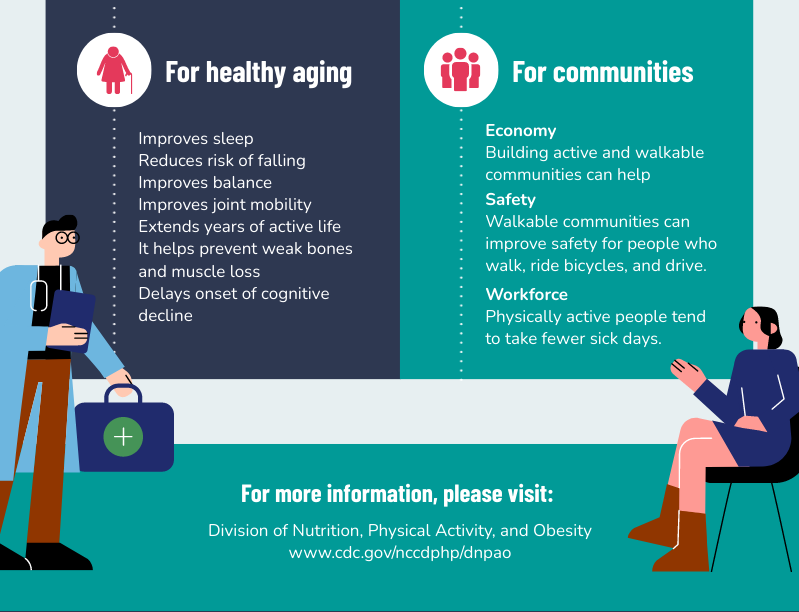
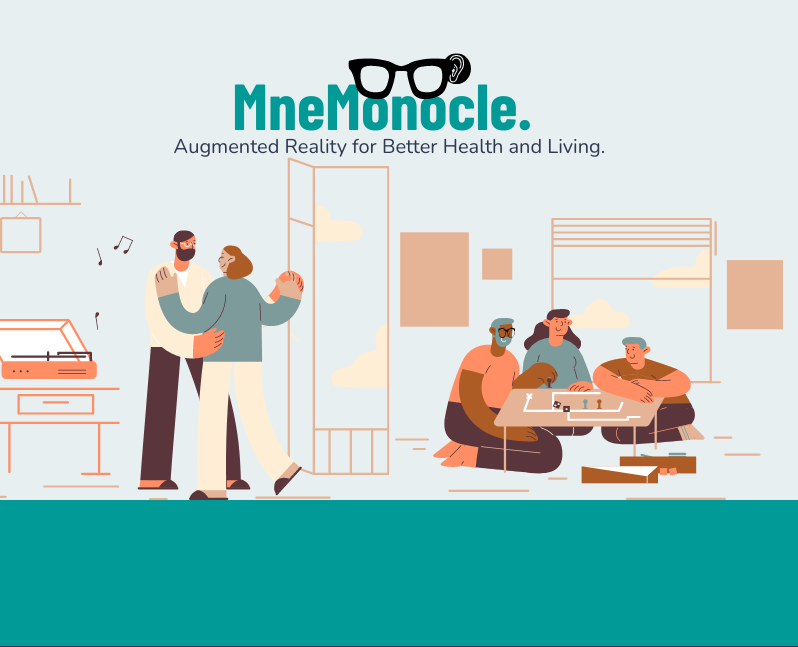
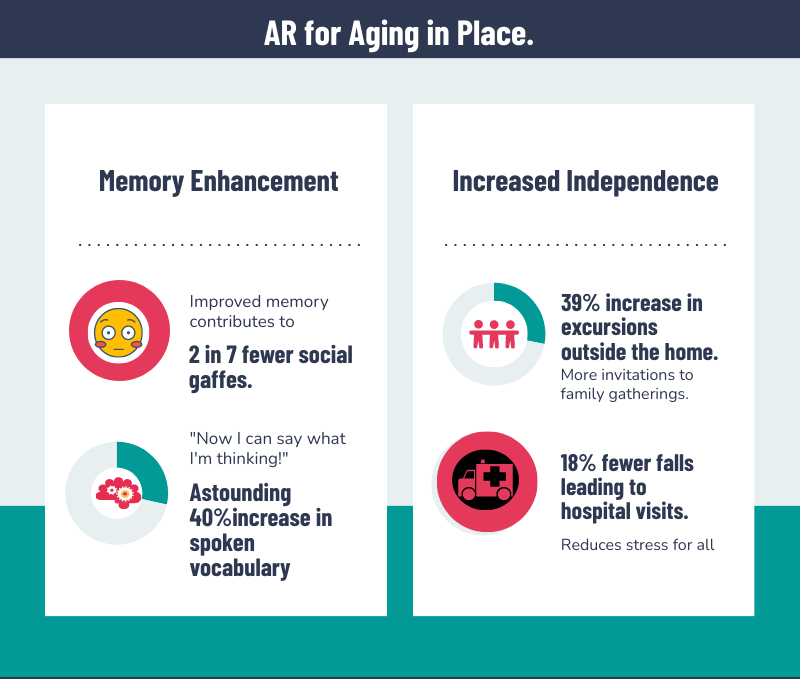
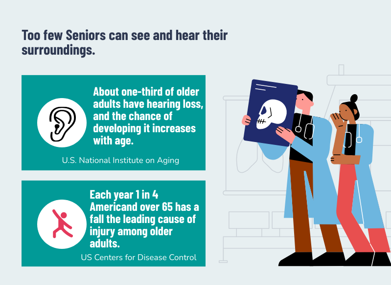
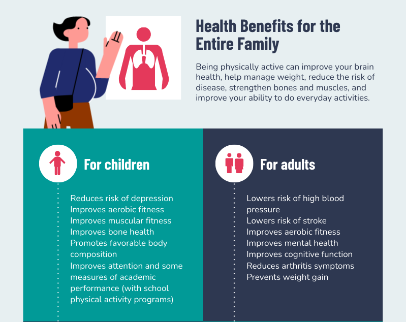
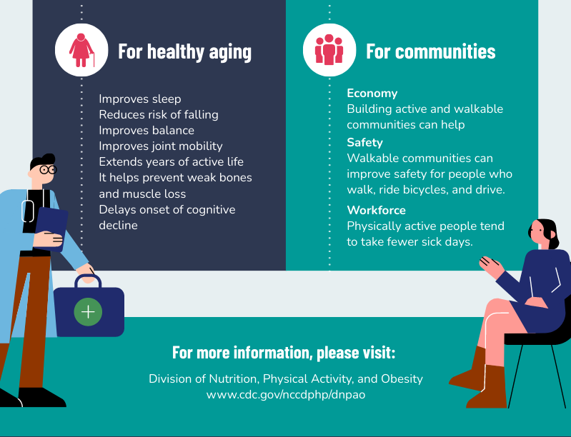

Augmented Reality for Everyone.
See how the MneMonocle could make a difference for you. Please note: This video does not have sound.
Enjoy a podcast testimonial from early adopter Juliet Charming.
    The MneMonocle pronounced "nemm-on-ic-ell", a combination of the mnemonic device and the monocle, or single-lens eyepiece.
The MneMonocle interprets the wearer’s eye movements in combination with the images taken in through its camera and the sounds received through the hearing aid. The MneMonocle has to learn a vocabulary to associate with the wearer’s responses to various stimuli, as well as the wearer’s gestures (nodding, tapping one’s ear, looking up and to the side, etc.) associated with that vocabulary. The “MneMonocle” is the gentle companion we always needed, to undetectably prompt us at the cocktail party with cues like, “There’s George! You worked with him in the shoe department. Go say Hello”.
See how the MneMonocle could make a difference for you. Please note: This video does not have sound.
Enjoy a podcast testimonial from early adopter Juliet Charming.
    